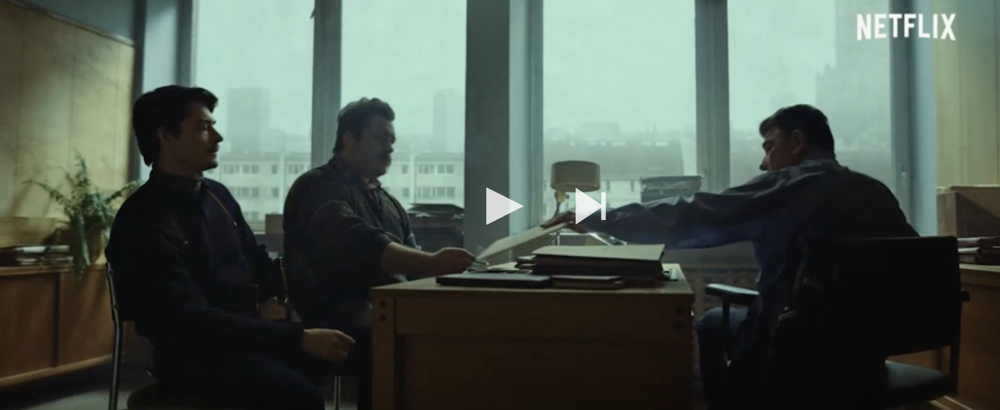

Operation Hyacinth, an operation undertaken by the Polish secret services (The SB) in the 1980s. The operation targeted the country's gay community, and the material gathered was used to extort men and to enforce their cooperation. Launched under the pretext of tackling the AIDS epidemic and prostitution, Operation Hyacinth saw a significant number of homosexuals imprisoned, arrested, or otherwise persecuted.
The protagonist has to go rogue in order to preserve his integrity. Robert becomes a private eye investigating corruption in his own organization on his own. His own family is as corrupt as the police force. Arek is an interesting turn on the femme fatale trope. Instead of destroying the lead character, Arek helps Robert to understand his own identity. BTW, Arek is short of Arkadius. Arcadia is a poetic term associated with bountiful natural splendor and harmony (Utopia).
Note that Eastern European neo-noir often deals with the controversial moments in national history. Cf. Lithuanian Isaac (dir. Jurgis Matulevicius 2019) examining Lithuanians participating in the Holocaust.
